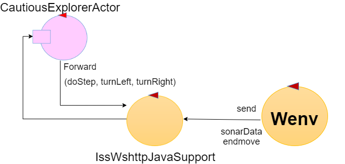

Introduction
This case-study deals with the design and development of proactive/reactive software systems
based on the concept of Actor, as introduced in
LabIss2021 | wshttp support with ActorBasicJava observers.
Requirements
Delivery
The customer requires to receive at
12 noon on April 6 a file named
cognome_nome_cea.pdf
including a (synthetic) description of the project (preceded by a proper analysis of the problem)
based on components of type
ActorBasicJava
and a reference to a
first working prototype (even with limited capabilities) of the system.
Meeting
A SPRINT-review phase with the customer is planned (via Teams) at
5.15 pm on April 6.
Requirement analysis
The client clarified the following terms:
- robot: entity capable of moving and able to communicate through the network, see the following documentation VirtualRobot2021.html.
- room: normal room delimited by walls that compose the intern of buildings.
- den: starting point; position also known by the robot
- device: piece of electronic equipment
- sonar: particular device that uses sound propagation to detect object presence
- detect: the sonar discover the presence of the robot and send a message as described in VirtualRobot2021.html
- feels: the robot has been detected by the sonar so it receives a message
- obstacle: any obstruction that blocks the passage of the robot, including walls
- map: representation of the room, showing the presence of obstacles
The main user Story (validated by the costumer)
As a user, I put the robot in the den as shown in the requirements picture (pointing south), then I activate the application cautiousExplorerActor.
The robot starts moving and it cannot be interrupted by any user-command. As soon as the robot hits an obstacle it returns to the den tracing back to his step.
After the application terminate a proper TestPlan should check the outcome.
Problem analysis
Relevant aspects
- The communication method imposed by the robot implies a distributed system composed by the client's robot and by our application that sends the commands to the robot.
- The sonar implies that we use websocket to comunicate with the robot.
- There is no abstraction gap between the programming language and the commands because there are already library to cover for it. Also, there is no abstraction gap between the communication methods because there are already the support needed.
- The following resources could be usefully exploited to reduce the development time of a first prototype of the application:
- The RobotMoveInfo.java to create the map.
- The it.unibo.supports library, see the documentation wssupportAsActorJava.html
- The robot should explore the room using a pre-determined-pattern, for example at first we could make squares on the map and increasing the dimension each time.
- The esiest way to return to the den after hitting an obstacle is that the robot traces back its step.
So it is simple to bring the robot back and we are sure that it doesn't encounter other obstacles along the way.
- The time expected to make the first working prototype is no more than 2 hours.
Test plans
Check the positions of the known obstacle in the resulting map.
Project
Schema

CautiousExplorerActor implements ActorBasicJava.java component.
Finite state machine
CautiousExplorerActor is implemented as an Mealy Machine.
The fsm is activated every time the handleInput receives the input message endmove sent by the IssWsHttpJavaSupport.java
In the state exploring the robot moves forming squares with length a number of step equals to sideLength.
When the robot hits an obstacle the fsm goes to the state obstacle.
In this state, the robot goes back in the den tracing back his step. To do so the program uses the information of the current side length, the number of times the robot turned left, and how many steps it took walking along the current side of the square.
Testing
Deployment
Maintenance